地政学
フィンランド湾の奥にある首都は、タリン、ストックホルム、サンクトペテルブルクを意識しながら動きます。EUとNATOの一員となり、港、空港、通信、備蓄、外交が日常の制度と結びつきます。海の背後に安全保障があります。
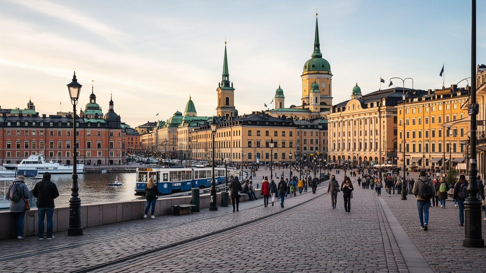
🇫🇮 フィンランド / 北欧 / World City Atlas
バルト海の港、首都行政、教育研究、デザイン建築、サウナと図書館の公共文化、東方国境への意識が、低く明るい街並みに重なる北欧の首都です。
都市の骨格
ヘルシンキは大陸の端ではなく、バルト海の航路、北欧の福祉国家、東西安全保障、教育研究、住宅政策が重なる実務的な首都です。中心部の低層街区から島、港、郊外鉄道までが一つの生活圏を作ります。
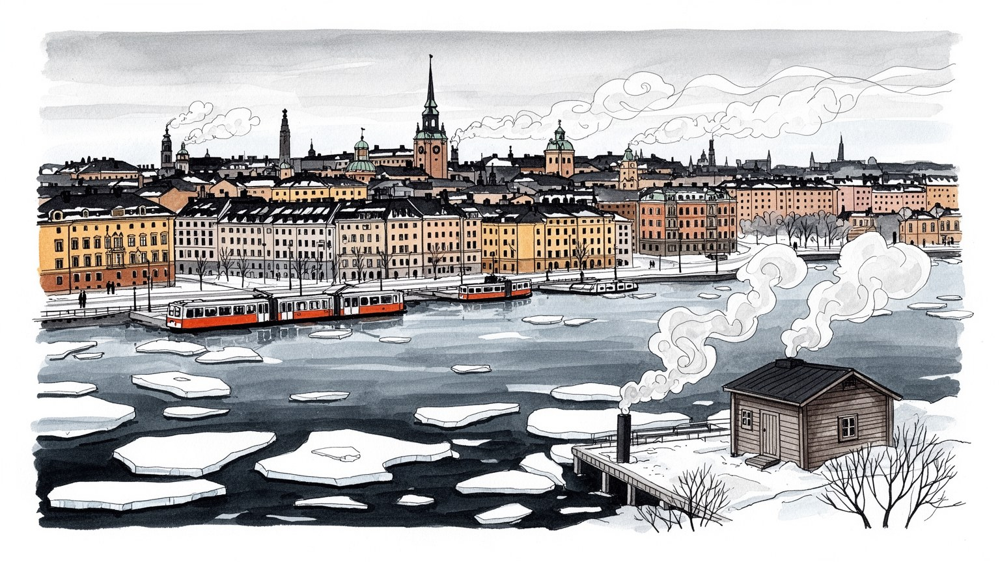
フィンランド湾の奥にある首都は、タリン、ストックホルム、サンクトペテルブルクを意識しながら動きます。EUとNATOの一員となり、港、空港、通信、備蓄、外交が日常の制度と結びつきます。海の背後に安全保障があります。
行政、ICT、ゲーム、教育研究、医療、港湾、デザイン、観光が雇用を支えます。高い賃金と技能を持つ職種だけでなく、清掃、介護、配送、飲食、建設、移民労働が福祉都市の毎日を動かします。住宅費と人材確保も焦点です。
ルーテル教会の白い大聖堂、正教会、世俗的公共文化、図書館、音楽、デザイン、サウナが重なります。フィンランド語とスウェーデン語の二言語性に、ロシア、エストニア、ソマリア、中東、アジアからの移動が加わります。
旅行者は大聖堂、マーケット広場、スオメンリンナ、デザイン地区、海辺のサウナを巡ります。住民には冬の暗さ、家賃、保育、公共交通、雪と氷、夏の光、森への近さが生活条件になります。観光と日常の距離は短い街です。
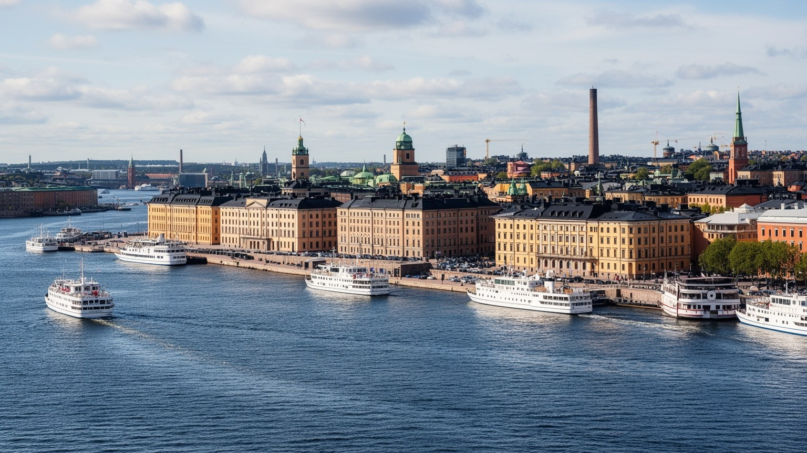
ヘルシンキはバルト海の北東側、フィンランド湾の奥に位置する首都です。海を挟んでタリンが近く、ストックホルムとはフェリーで結ばれ、東にはサンクトペテルブルクとロシア国境への記憶があります。この地理は、街を静かな北欧都市に見せながら、常に交易、外交、防衛、エネルギー、通信の結節点にしてきました。中心部の港からは旅客船が出入りし、政府庁舎、議会、大学、金融機関、文化施設が低い街並みの中に集まります。フィンランドがEU加盟国であり、NATOにも入った現在、ヘルシンキは国内政治だけでなく、北欧、バルト三国、欧州安全保障の窓口でもあります。海は観光の背景ではなく、物資、人、情報、脅威が通る実際の通路です。冬に氷が張る湾、島々の防衛施設、港の保安、海底ケーブル、エネルギー供給、難民や移民の移動は、首都の政策を具体的にします。ヘルシンキを読むには、白い大聖堂や整った通りだけでなく、地図上の距離感を見る必要があります。小さく見える都市が大きな国際関係を受け止めるのは、海に開いた場所であると同時に、東西の緊張を近くに感じてきた首都だからです。港の岸壁と官庁街が近いことは、外交が生活から遠い話ではないことを示します。フェリーの時刻表、燃料価格、国境管理、大学の国際交流、港のニュースが、同じ都市の予定表に並びます。そこに首都の現実があります。
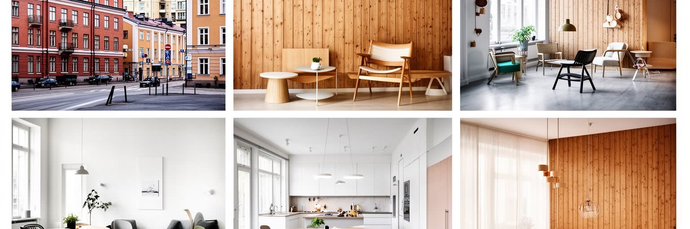
ヘルシンキのデザインは、博物館や店舗だけに閉じたブランドではありません。椅子、食器、織物、照明、標識、トラム停留所、図書館、学校、住宅団地、港の待合室まで、日常の使いやすさを都市の価値としてきました。アールヌーヴォーの石造建築、アルヴァ・アアルトの近代建築、戦後の郊外計画、近年の木造建築や公共図書館が、街の時間を重ねます。デザイン地区には観光客向けの店も多いが、重要なのは商品の美しさだけでなく、素材、修理、長く使う感覚、公共サービスの形まで含む設計思想です。低層で明るい中心市街地は、寒い冬でも歩きやすい幅、広場、カフェ、屋内公共空間を求めてきました。港湾倉庫の転用、旧工業地の住宅化、海辺のサウナ施設も、都市の余白を新しい生活へ変える試みです。一方で、デザインの成功は家賃上昇や高級化を伴い、中心部に誰が店を出し、住み続けられるかを問います。ヘルシンキの建築を読むとは、美しい外観を眺めるだけでなく、福祉国家の公共性、民間投資、気候への配慮、移民や若者の居場所が、どの空間に現れているかを見ることでもあります。設計文化は都市の気取りではなく、暮らしを具体的に整える技術です。その技術は、雨や雪の日に迷わず入れる玄関、子どもが使いやすい家具、視覚的に落ち着いた案内板にも宿ります。小さな配慮の積み重ねが、都市全体の信頼感を作ります。
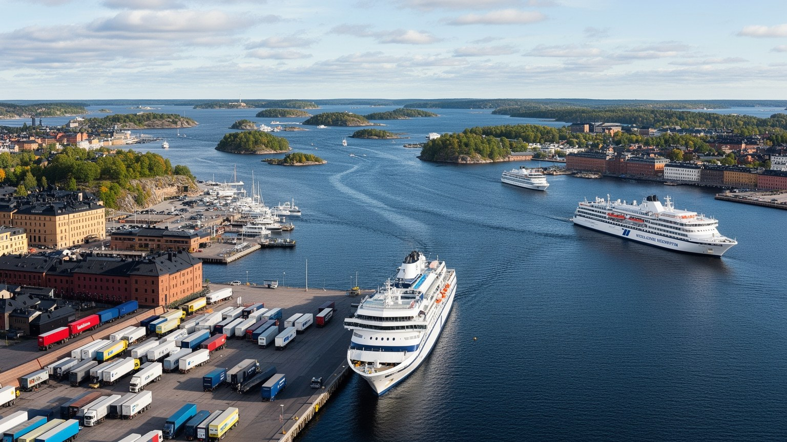
ヘルシンキの港は、観光の水辺であると同時に、都市圏の物流と北欧の移動を支える実務の場所です。タリン行きのフェリーは短い海峡を日常的な距離へ変え、買い物、通勤、観光、親族訪問、労働移動を結びつけます。ストックホルム行きの船は、バルト海の文化圏と商業圏を保ち、クルーズ客は中心部の市場、教会、博物館へ流れます。マーケット広場では魚、ベリー、野菜、コーヒー、土産物が並び、観光客の写真と住民の買い物が同じ寒風の中で交差します。貨物港は市街地の外側へ機能を広げ、食品、建材、工業製品、郵便、燃料、車両が道路と鉄道へ移ります。港湾は旅客ターミナルだけでなく、荷役、清掃、整備、保安、税関、船員、運転手、気象判断の労働で成り立ちます。冬の氷、強風、霧、燃料費、ロシア情勢、バルト海の環境規制は、航路と都市経済に影響します。港に近い街は便利ですが、騒音、排気、交通、観光混雑、岸壁の土地利用も抱えます。ヘルシンキを読むには、美しい船だけでなく、フェリーが作る越境の日常、海運の脱炭素化、港湾労働者の安全、物流拠点へ向かうトラックの道を見る必要があります。船が遅れれば、観光客の予定だけでなく、店の仕入れ、出張、家族の移動にも波及します。港は水辺の風景であると同時に、時間を守る都市インフラでもあります。海辺の美しさと運行の正確さは、同じ港の両面です。
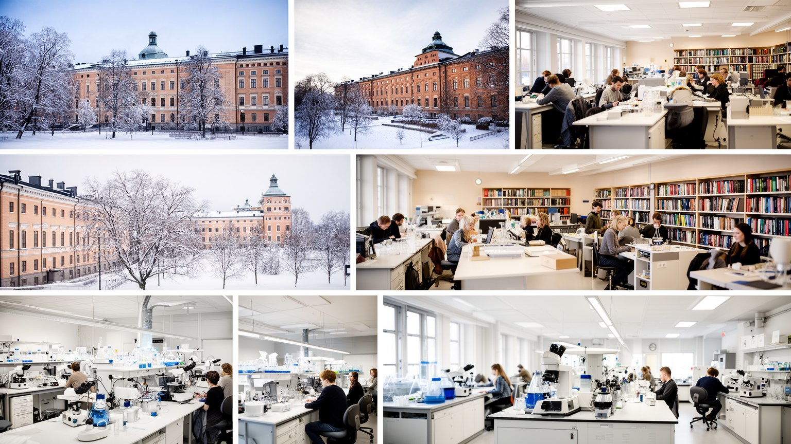
ヘルシンキはフィンランドの政治首都であるだけでなく、教育と研究の集中する都市です。ヘルシンキ大学、アールト大学との都市圏連携、応用科学大学、研究機関、病院、スタートアップ支援、公共図書館が、国の知識基盤を支えます。教育の評価が高い国として語られる時、都市には教員養成、学校建築、子どもの福祉、特別支援、多言語教育、大学研究の現場があります。中心部のオーディ図書館のような公共空間は、本を借りる場所にとどまらず、市民が学び、働き、集まり、子どもを連れ、行政サービスへ接続する場所になっています。研究産業はICT、ゲーム、医療、気候技術、海洋、教育技術へ広がり、高技能移民や留学生も集めます。一方で、国際人材の定着には英語だけでなく、フィンランド語、就職、家族の住まい、保育、冬の生活への支援が必要になります。大学都市としての魅力は、優秀な学生を集めるだけでは測れません。研究成果が学校、医療、住宅、交通、気候政策へ戻る回路を持てるかが重要です。ヘルシンキを読むには、研究室の成果と、近所の図書館で宿題をする子ども、移民が言語を学ぶ教室、高齢者がデジタル手続きを教わる机を同じ知識インフラとして見る必要があります。学ぶ権利を公共空間に置くことが、この首都の競争力を静かに作っています。教育の都市であり続けるには、専門職だけでなく、学校清掃、給食、学生住宅、図書館職員の労働も安定していなければなりません。
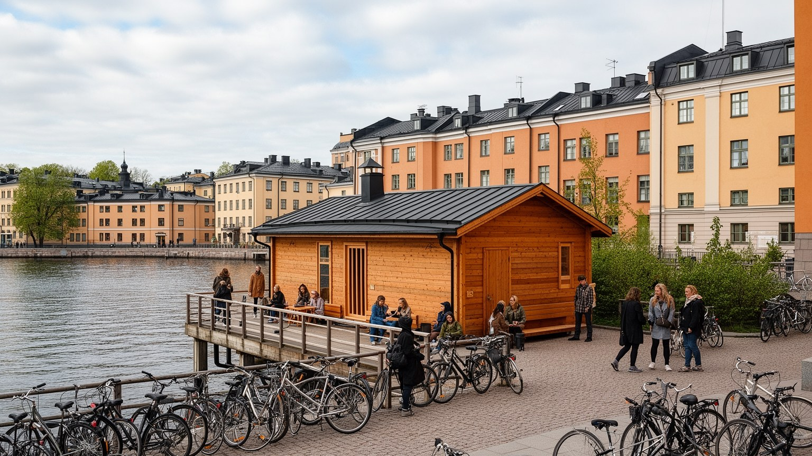
ヘルシンキのサウナは、観光客が体験する北欧らしさである前に、住民の身体感覚と社会性を支える日常文化です。集合住宅の共用サウナ、海辺の公共サウナ、友人宅の小さなサウナ、冬の海へ入る習慣は、長い寒さと暗さを越えるための都市の知恵でもあります。ロウリュの熱、木の香り、静かな会話、外気浴、冷たい水は、仕事と家庭の緊張をほどく時間を作ります。サウナは宗教施設ではありませんが、身分や職業の差を一時的に薄め、裸の身体で同じ熱を受ける点で、平等を体感させる空間でもあります。近年の海辺サウナは都市再生や観光の象徴になり、建築、飲食、イベント、ウェルネス産業と結びつきます。しかし人気が高まるほど、料金、混雑、騒音、地元利用と観光利用のバランスが問題になります。サウナ文化を読むには、写真に映る木造デッキだけでなく、住宅の共用予約表、公共施設の維持、冬の安全、ジェンダーとプライバシー、多文化社会での受け止め方を見る必要があります。ヘルシンキのサウナは贅沢な余暇ではなく、寒冷な海辺都市が心身を整え、他者と静かに同じ場所を分け合うための生活技術です。熱と水の小さな儀礼が、首都の日常に独特の柔らかさを与えています。公共サウナの運営には、薪や電力、水質、清掃、救助体制、近隣への配慮も欠かせません。心地よい沈黙は、見えない管理の上に成り立つ場です。
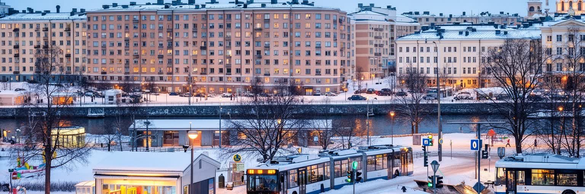
ヘルシンキの暮らしやすさは、自然の近さや治安だけでなく、住宅、保育、学校、医療、交通を組み合わせる政策によって支えられています。フィンランドの福祉国家は抽象的な制度ではなく、保育園の場所、学校給食、公共交通の運賃、図書館、診療所、社会住宅、混合居住の街区として都市に現れます。中心部の家賃は高く、成長する人口と国際人材の流入は住宅不足を強めるため、新しい住宅地の開発、旧港湾用地の転用、郊外鉄道沿線の高密化が進みます。社会的な住まいを市内に分散させる試みは、所得や出身による分離を弱める一方、財政負担、土地価格、住民合意の難しさも伴います。冬の都市では、暖房費、断熱、雪かき、屋内共有空間が生活の質を左右します。移民、高齢者、学生、単身者、子育て世帯、ホームレス経験者に必要な住まいは異なり、一つの平均的な住宅政策では足りません。ヘルシンキを読むには、きれいな街並みだけでなく、誰が市内に住めるのか、通勤時間をどこまで短くできるのか、支援を受ける人が地域から孤立しないかを見る必要があります。子どもの通学路、高齢者の除雪された歩道、ベビーカーで入れる店、夜に帰れるトラムは、福祉の実感を作ります。住宅は市場商品である前に、都市の市民権を支える基盤です。新しい街区が成功するかは、建物の外観だけでなく、保育園、店、冬でも使える歩道、夜に帰れる交通が最初からあるかで決まります。
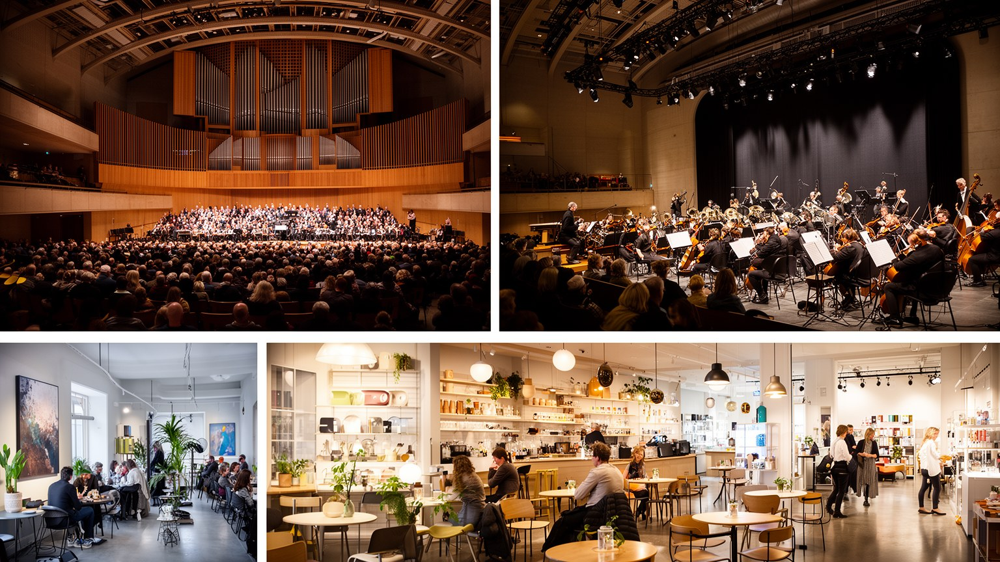
ヘルシンキの文化は、静かで整った北欧都市という印象よりも多声的です。国立劇場、音楽センター、フィンランド国立歌劇場、現代美術館、映画祭、デザインイベント、地下音楽、ゲーム文化、図書館のワークショップが、異なる世代と階層を集めます。シベリウスの記憶は国民音楽の象徴であり、同時に電子音楽、メタル、ジャズ、ヒップホップ、移民コミュニティの音も都市に響きます。アイスホッケー、サッカー、冬のスキー、海辺のランニングは、観戦と参加の両方で日常の会話を作ります。ルーテル教会の鐘、正教会の聖歌、世俗的な祝祭、ラマダンや各国料理の集まりは、宗教と文化の境界を広げます。フィンランド語とスウェーデン語の二言語性に、エストニア語、ロシア語、ソマリ語、アラビア語、英語が加わり、学校や市場、公共施設の言葉も変わっています。文化施設は国のアイデンティティを見せる場である一方、若者や移民が自分の表現を持てるかどうかを問う場でもあります。高い生活費はアーティストや小さなライブハウスを圧迫し、中心部の商業化は実験的な空間を減らすことがあります。ヘルシンキを読むには、大きなホールだけでなく、郊外の練習室、学校の音楽教育、図書館の録音室、夏の公園フェス、冬の小さなクラブ、地域スポーツのリンクを見る必要があります。文化は飾りではなく、寒く長い季節に人を外へ連れ出し、都市の孤独を少し薄める公共的な力です。
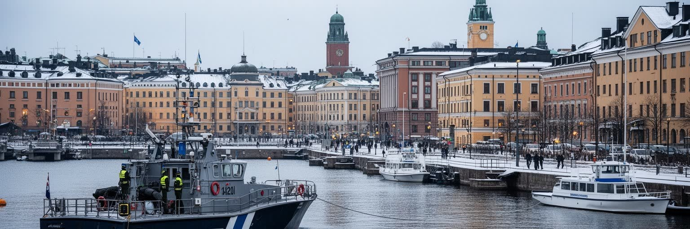
ヘルシンキの日常は穏やかに見えますが、フィンランドの近現代史にはロシア帝国、独立、内戦、冬戦争、冷戦、中立外交、EU加盟、そしてNATO加盟という緊張の層があります。首都はこの歴史を、記念碑や博物館だけでなく、備蓄、兵役、避難施設、通信の冗長性、港湾保安、サイバー防衛、行政の危機管理として受け継いでいます。ロシアによるウクライナ侵攻以降、東方国境への意識はさらに強まり、ヘルシンキは北欧とバルト地域の安全保障を考える都市になりました。安全保障は軍事施設だけの問題ではありません。エネルギー供給、医薬品、食品、海底ケーブル、銀行決済、公共交通、偽情報への対応、住民への避難情報が、首都の生活基盤と直結します。移民やロシア語話者を一括りに疑うのではなく、開かれた社会を守りながら警戒を高める難しさもあります。ヘルシンキを読むには、要塞島スオメンリンナの歴史、政府庁舎の静けさ、地下空間の整備、学校での市民教育、港と空港の管理を一つの連続として見る必要があります。安全な都市とは、恐怖を前面に出す都市ではなく、危機が来ても生活を止めにくい制度を平時から整える都市です。北の首都の落ち着きは、備えを社会の普通の作法にしてきた経験に支えられています。地下鉄駅や公共建築の設計、自治体の情報発信、企業の継続計画も、この備えの一部です。安全保障は専門家の領域に見えて、住民が信頼できる日常手順の積み重ねでもあります。
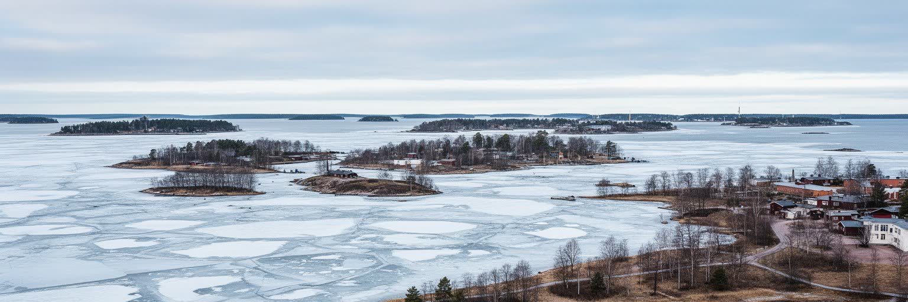
ヘルシンキの気候は、北の緯度とバルト海の影響を同時に受けます。冬は暗く長く、雪、氷、凍結した歩道、短い日照が通勤、健康、建物管理を左右します。夏は光が長く、海辺、公園、島、テラス、祭りが一斉に開き、住民は短い季節を濃く使います。この明暗の差は、都市の心理と公共空間の使われ方を大きく変えます。気候変動はヘルシンキにも、冬の雨の増加、凍結と融解の繰り返し、海面上昇、豪雨、都市排水、海の生態系変化として現れます。寒冷都市だから暑さに無縁なわけではなく、夏の熱波は高齢者、断熱性の高い住宅、医療施設に負担をかけます。海辺の新しい住宅地は魅力的ですが、高潮、波、塩害、インフラ保護を考えなければなりません。雪を処理する労働、冬季の自転車道管理、暖房の脱炭素化、建物のエネルギー改修は、観光客には見えにくい都市運営です。ヘルシンキを読むには、冬の静かな美しさと、暗さに対する福祉、照明、屋内公共空間、メンタルヘルス支援を一緒に見る必要があります。海と季節は都市の風景であるだけでなく、政策、建築、移動、健康を決める条件です。北の首都は、寒さに耐える都市から、変わる気候に適応する都市へ移りつつあります。排水路、緑地、海辺の高さ、建物の冷房、冬道の維持は、地味ですが将来の生活費を左右します。季節への対応は美学ではなく、都市の公平性に関わります。
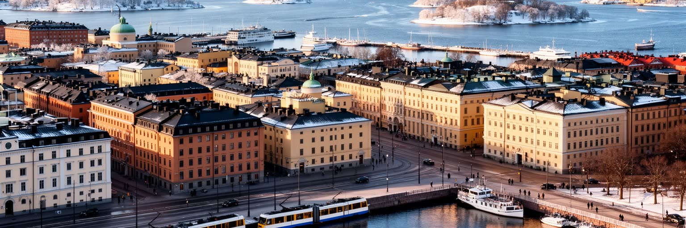
ヘルシンキを読むことは、白い大聖堂、トラム、港、サウナ、森の近さという穏やかな印象を、首都機能、福祉制度、港湾物流、安全保障、移民、住宅、気候適応の層へ開くことです。都市の規模は世界の巨大都市ほど大きくないが、フィンランドの政治、教育研究、デザイン、文化、国際交通が集中し、北欧とバルト地域の判断がここで形になります。公共図書館、学校、保育、社会住宅、公共交通は、福祉国家を日常の空間へ変える装置です。一方で、人口増加、家賃、中心部の高級化、移民の就業、冬の孤独、エネルギー転換、ロシア情勢への警戒は、整った街の裏側にある現実です。旅行者が歩くマーケット広場、デザイン地区、スオメンリンナ、海辺のサウナは、住民の日常と重なっており、観光だけの舞台ではありません。ヘルシンキの強さは、過度な壮大さではなく、公共施設を使いやすく保ち、自然に近い都市でありながら国際関係の緊張にも備える実務性にあります。港の船、図書館の机、住宅地の雪道、研究機関、コンサートホール、地下の備えを同じ地図に置くと、この首都の輪郭ははっきりします。海に開いた小さな大都市は、福祉と安全、開放性と警戒、静けさと多文化化の均衡を毎日調整しています。だからヘルシンキの魅力は、絵になる北欧らしさだけではありません。制度が街路に降り、街路が海と森へつながることで、住民が公共性を具体的に使える点にあります。